Analog Radio Transmitter
Introduction
The purpose of this experiment was to implement a Colpitt Oscillator and then use that oscillator to create a modulator to transmit an RF signal. We also gained further practice with LTSpice, bread boarding, and soldered our final projects.
This lab also taught me how to create a new type of oscillator using an inductor, which made it a type of oscillator that we had not yet designed or used in lab. This type of oscillator uses resistances to bias a BJT transistor and an inductor and two capacitances in series to determine the frequency. The equation for the frequency is wo=((C1+C2)/(C1*C2*L))^.5, where wo=2*π*f. The feedback circuit that causes the circuit to oscillate is the combination of the inductor with the two series connected capacitors.
This oscillator was then used as a carrier frequency for the modulator and transmitter that was built in the second part of the lab. The modulator that we built in lab uses a transistor to add the signals coming from oscillator to the audio signal coming in. The signal from the oscillator comes into the base of the first transistor (biased in common emitter configuration) to modulate the collector current. However, the collector current was also being varied by the second transistor which is wired below the first. This second transistor used the incoming audio signal to modulate the current going through both transistors. Because the current in the first transistor is being modified by the second transistor and by the oscillating voltage at the gate, the current at the collector of the first transistor represents the sum of the two currents. The sum of these two signals is then sent to an antennae circuit so that the signal could be transmitted. The transmitted signal was then listened to using an ordinary radio tuned to the same frequency as the carrier frequency.
Materials
The materials used to create the oscillator were a breadboard, two 1 mH inductors (which are put together to form a 500 uH inductor), a 10 uF, 1 nF, 95 pF, 475 pF capacitors, a 9-90 pF variable capacitor, 1-10 K ohm potentiometer, 470 ohm, 39 ohm, 16 ohm resistor, 2N3704 NPN transistor, prototype board and, soldering iron, solder, oscilloscope, function generator, and power source.
The materials used to create the modulator and transmitter were a breadboard, two 1 mH inductors (which are put together to form a 500 uH inductor), 400 uF capacitor with a ferrite core, a 10 uF, 90 pF, 1.6 uF, 1 uF, 790 uF, 53 nF capacitors, 9-90 pF capacitor, two 100k ohm potentiometers, 18 k, 23 k, 29k, 15k, 1k, 2.1k ohm resistors, two 2N3704 NPN transistors, prototype board, solder, iron, oscilloscope, function generator, and power source.
Procedure
Part 1: Oscillator
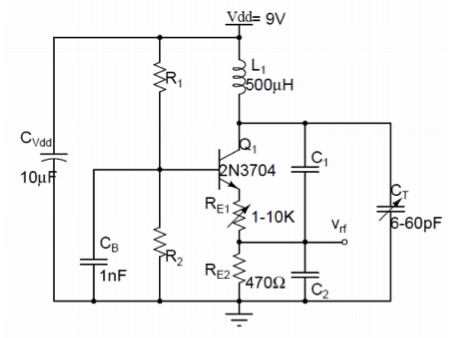Figure 1: Colpitt Oscillator Circuit
Before the circuit in Figure 1 could be implemented, a number of values had to be calculated. The collector current had to be 1 mA and the parallel combination of R1 and R2 had to be 12 k ohm. Details about these calculations can be found in Figure 2 of Appendix A. Then a small signal analysis was conducted on the circuit in order to determine the value of C1 and C2. Details about these calculations can be found in Figure 1 and 2 of Appendix A.
Once the calculations were complete, the circuit was simulated in LTSpice. After building the schematic, various analyses were conducted on the circuit. The DC operating point of the circuit was found. A transient simulation was run while monitoring the collector voltage to determine the operation frequency of the oscillator. Then an FFT analysis was conducted on that voltage. Another FFT analysis was then conducted on the current through the inductor. Then the frequency of operation was determined by tuning the variable capacitor.
After the spice results were found, the circuit was implemented on a breadboard. After the circuit was built, the oscillation frequency was determined by monitoring the voltage at base node. Then an FFT analysis was run on that voltage. Finally the frequency of operation was found by tuning the variable capacitor. Finally, in order to make our circuits more permanent and reliable they were soldered to a prototype board. Measurements were then performed on the soldered circuit to ensure it worked properly.
Part 2: Modulator and transmitter
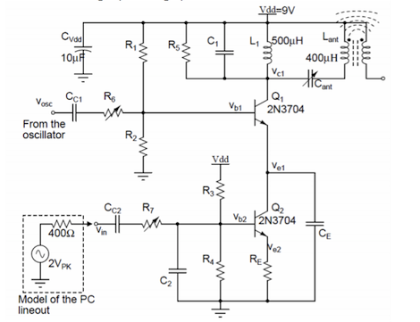Figure 2: Circuit Diagram of Modulator and Transmitter
In the second part of the lab, more hand calculations were conducted to find the values of the necessary components from the circuit in Figure 2 Details about all of these calculations can be found in Figure 3 of Appendix A.
Once the calculations were completed, the circuit was simulated in LTSpice. A 5 kHz signal was used as the input audio tone in the simulation. The current in Q1 was monitored to ensure the current was not too large. Then an FFT analysis was don’t on the collector current of the first transistor. Then the voltage at the collector of Q1 was measured to ensure the small signal amplitude was small enough to avoid distorting the signal. Finally, the current in Lant was measured.
After simulating in LTSpice the circuit was implemented on the breadboard. After the circuit was built, the modulated frequency was determined by monitoring the voltage at Lant. Then an FFT analysis was run on that voltage. Finally, in order to make our circuits more permanent and reliable they were soldered to a prototype board. Measurements were then performed on the soldered circuit to ensure it worked properly.
With the real world implementation of the circuit, the carrier frequency input was fed a 1V peak 750 Hz sine wave and the audio input was fed a 2 V peak sine wave that varied from a frequency of 400 Hz to about 15 KHz. That was the range that we could audibly hear a signal being transmitted over the radio. When the audio and carrier signal were connected, two signal generators were used, one for each signal. The oscillator from part 1 was not used because the final version did not yield the exact desired value. Furthermore, the transmitter circuit was optimized for a carrier frequency of 750 kHz, so a 750 KHz wave was fed from one signal generator and a changing frequency signal was fed from the other input.
Procedure
Part 1: Oscillator
The inductors were measured and the first inductor values were: L1=1.0295mH, Q1=2.8098. For the second inductor, the values were: L2=1.0315mH, Q2= 2.8075. The results from the hand calculations for the missing values can be found below in Table 1.
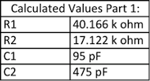Table 1:Calculated values for oscillator circuit
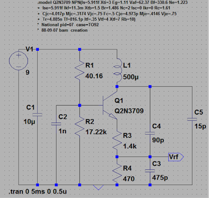Figure 3: LTSpice Oscillator Circuit
The circuit in figure 3 was simulated in LTSpice. Its operating point can be found below in figure 4. It shows that the transistors were biased properly so that they are both in the active region of operation.
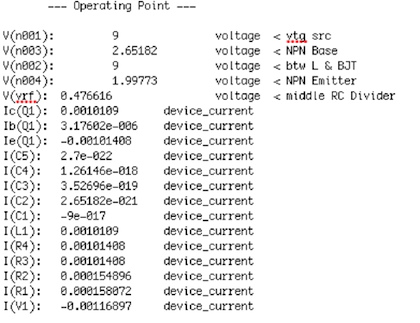Figure 4: Operating Point Information from LTSpice simulator of oscillator
After finding the DC operating point of the circuit, a transient analysis was performed to determine what the output signal frequency was. A graph of the signal can be found in figure 5. The output frequency of the signal was found to be 748 KHz which is very close to the desired value of 800 KHz.
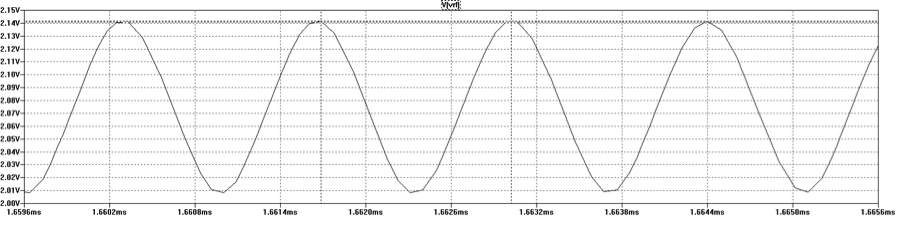Figure 5: LTSpice output signal from oscillator
Then an FFT analysis was run on the voltage to find the magnitude of harmonic frequencies in the signal. This FFT analysis can be found in Figure 6, and the information regarding the magnitude of the peaks of the harmonics can be found in Table 2.
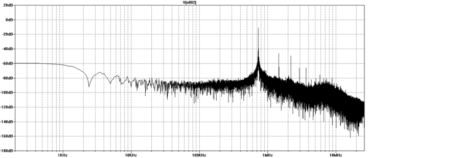Figure 6: FFT Analysis of output signal of oscillator in LTSpice
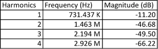Table 2: Peak harmonic frequencies from FFT and magnitudes at output voltage in LTSpice
Then an FFT analysis was run on the current flowing through the inductor and the peaks of the harmonics were found. This FFT analysis can be found in Figure 7, and data regarding the peaks of the harmonics can be found in table 3.
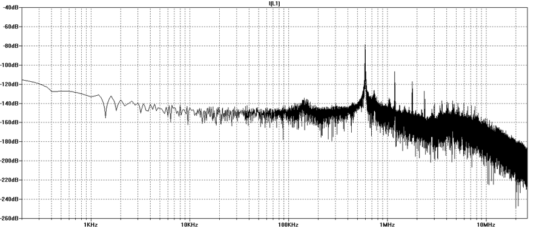Figure 7: FFT analysis of inductor current of LTSpice oscillator circuit
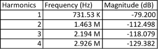Table 3: Peak harmonic frequencies from FFT and magnitudes from inductor current
Then the variable capacitor was tuned from 9 to 90 pF (the value of the actual capacitor from the lab) and the frequency range was found to be from 748 KHz at 9pF to 544 KHz at 90 pF. This shows that the bandwidth of the signal was about 200 KHz using the tuning capacitor.
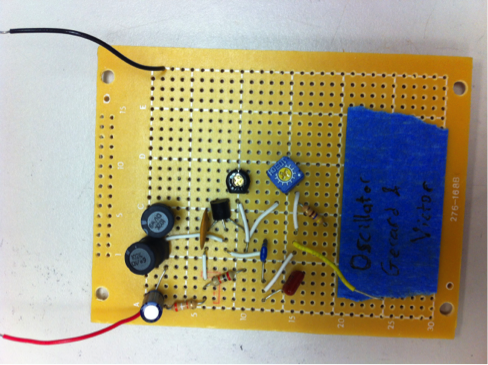Figure 8: Picture of oscillator on proto-board
After performing the LTSpice analysis, the circuit was implemented on a breadboard, and then on a prototype board. An image of the circuit of the oscillator on the proto-board can be found in Figure 8 above. The output signal was measured on the oscilloscope and a graph of this can be found in Figure 9.
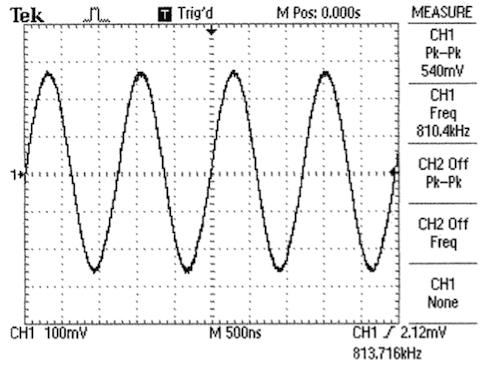Figure 9: Output signal of oscillator on proto-board
Then an FFT analysis was run on the signal to determine the frequency of the harmonics. A graph of this analysis can be found in figure 10 and a table describing the data regarding the magnitude of the peak harmonic frequencies can be found in table 4. The FFT analysis shows a slightly higher frequency than on the breadboard because the capacitances were optimized for the breadboard and not the proto-board which had different cross capacitances.
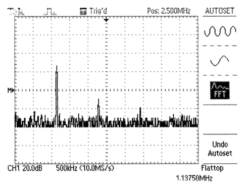Figure 10: FFT analysis of output signal of oscillator on the proto-board
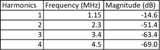Table 4: Peak harmonic frequencies and magnitudes from FFT of proto-board oscillator
The variable capacitor did not cause the oscillator to have a range of frequencies. Instead it would go from being in a state where there was no output at all to a state where a signal with a 810 KHz frequency was present. There was unfortunately no ability to tune the circuit frequency using the variable capacitor. Instead the frequency was gotten to 810 KHz on the breadboard because one capacitance, C1 was changed to optimize the frequency on the breadboard.
Part 2: Modulator and transmitter
Before creating the circuit, the values of various components had to be calculated. The values of these components can be found in table 5. The value of CC1 was calculated to be 159 pF, but that is the minimum value for the capacitor and coupling caps are more effective at blocking out DC voltages when they are around 1 uF or greater. The values of R6 and R7 were both set to about the same level in order to get the clearest signal across the radio and it was about 25 K ohm for both.
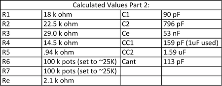Table 5: Calculated values for transmitter circuit
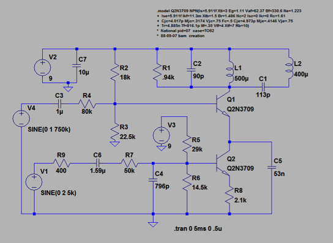Figure 11: LTSpice circuit of modulator and transmitter
The oscillator was implemented in LTSpice using the circuit schematic above in Figure 11.In order to simulate the circuit, a carrier frequency of 750 kHz was used and a 2V input audio signal of was also used. Figure 12 below shows the current going through the collector of Q1. It shows that the modulating signal is at the right level.
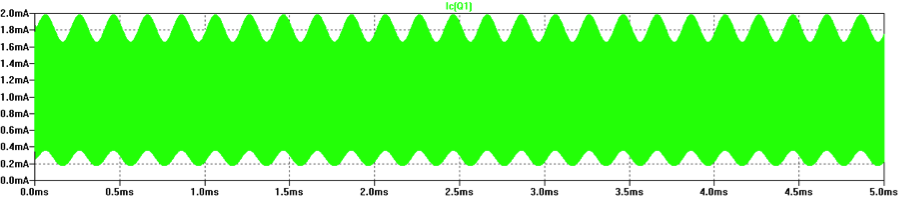Figure 12: Graph of current at collector Q1 in LTSpice simulation of modulator
Then an FFT analysis was conducted which can be found below in figure 13. It shows that there are two major peaks to this signal which are as expected. One at 5 KHz (from the audio input) and another at 750 KHz (the carrier frequency). The subsequent peaks are harmonics of the carrier frequency.
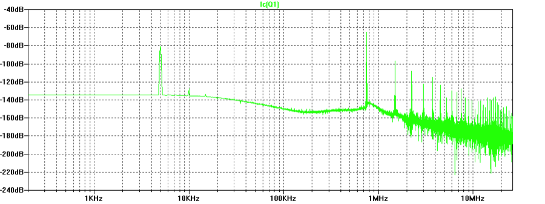Figure 13: FFT of current at collector in Q1 in LTSpice simulation of modulator
Then the voltage at the collector of Q1 was measured to ensure that the small signal was small enough to avoid distorting the signal by changing the biasing of the transistors. The graph in figure 14 shows that the small signal was not very big and would not distort the signal because it varies between 9.05 and 8.96 volts.
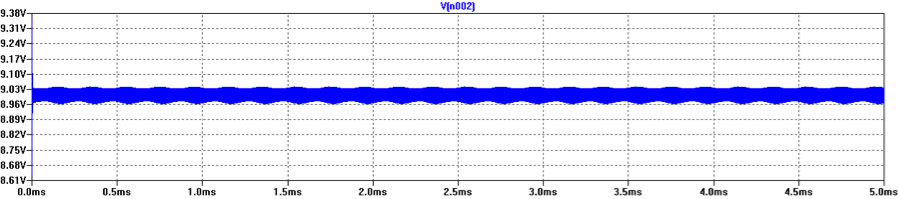Figure 14: LTSpice graph of voltage at collector of Q1 of modulator
Then the current in Lant was measured and it can be found in figure 15. It shows a healthy current because it varies from -.8 mA to .8 mA.
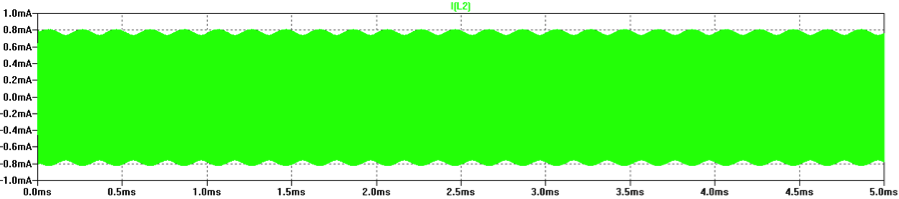Figure 15: LTSpice graph of current in Lant of transmitter
An FFT analysis was run on the current in Lant which can be found in figure 16. This graph shows a peak at 750 KHz as expected due to the carrier frequency. However, it also shows an inverse peak at 5 KHz. A peak was expected at 5 KHz, but it was not expected that it would be an inverse peak. However, the fact that there is a peak indicates that the signal is present.
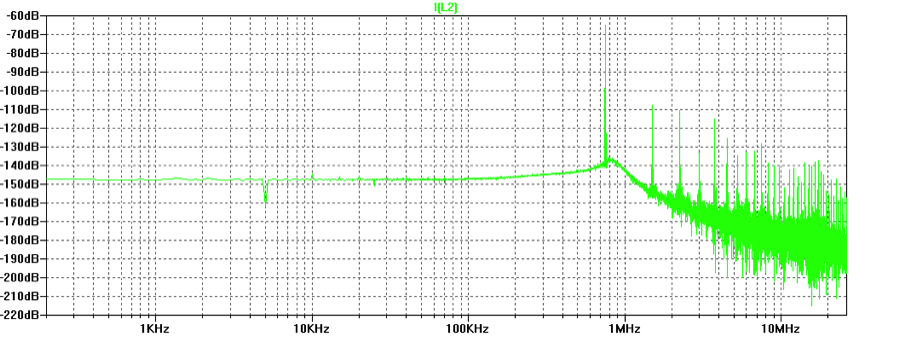Figure 16: LTSpice FFT of current in Lant of transmitter in LTSpice
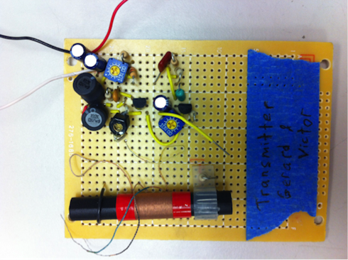Figure 17: Pictures of transmitter circuit on proto-board
After simulating the transmitter/modulator in LTSpice it was implemented on a breadboard to make sure it worked, and then it was implemented on a proto-board. A picture of the circuit on the proto-board can be found in figure 17 above. Then the voltage at the node between Cant and Lant was measured and can be found in figure 18. Figure 19 shows a graph of the same signal, but with a zoom on the frequency to better show the 750 KHz carrier frequency. The waveforms in both graphs show that the amplitude of the 750 KHz signal is being modulated by the 5 KHz input audio signal.
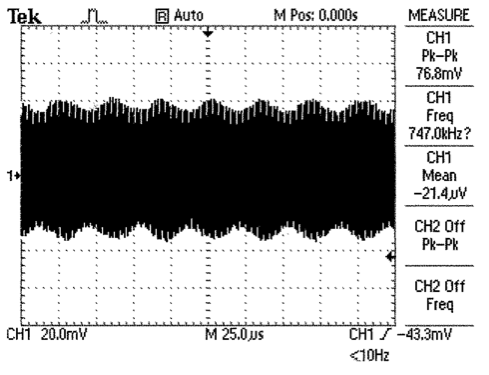Figure 18: Graph of voltage at Cant to Lant node of transmitting on proto-board
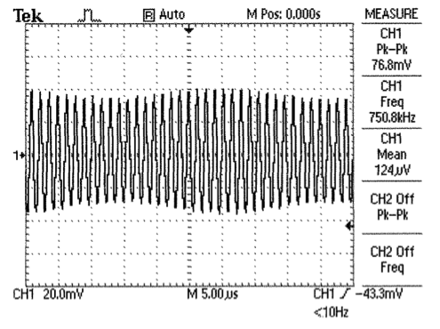Figure 19: Zoomed in graph of voltage at Cant to Lant node of transmitter on proto-board
Then an FFT analysis was conducted on this signal and it can be found in figure 20. It shows that there is a major peak at 750 KHz and another at its harmonic of 1.5 MHz.
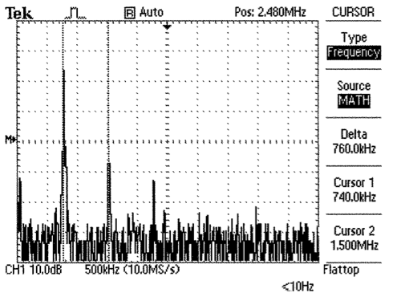Figure 20: FFT of voltage at Cant to Lant node of transmitter on proto-board
After verifying that all measured results made sense, we turned on a radio and set it to 750 KHz to see if we could hear the signal that we were transmitting though Lant. When the radio was close enough to the transmitter circuit, the input tones were clearly audible. The audio signal was also clearer when we listened to our transmitter when it was soldered to the proto-board rather than on the breadboard. Overall, we were able to make a working radio transmitter.
Discussion
Part 1
The results from the LTSpice simulation showed that the oscillator was functioning correctly. When we ran the circuit with very similar values to what we obtained with the hand calculations, we were able to get the circuit to oscillate with a frequency of 748 kHz. This value is close to the desired value of 800 KHz, so we can assume that the results from the hand calculations were valid. When this circuit was implemented on the breadboard, it was not oscillating at the correct frequency. In order to get the oscillation close to 800 KHz, the value of C1 had to be altered. In order to get the oscillation to the desired value, a 27 pF capacitor was used for C1. Using this value for C1 allowed the circuit to oscillate at 810 kHz which is very close to the desired value of 800 kHz. When the circuit was implemented on the breadboard and on the proto-board, tuning the capacitor Ct had very little impact on the frequency. When Ct was set correctly, the circuit oscillated at a constant 800 KHz. When Ct was further turned, the oscillation frequency changed very little, and then the amplitude of the signal decreased until the output signal disappeared. Because of this, the only way to change the oscillation of the circuit was to change the value of C1 to 27 pF. One of the reasons why this had to take place is because all of the components used in the lab have a tolerance and do not behave exactly as they do in the models or the calculations. It is not exactly sure why tuning the capacitor Ct did not have an impact on frequency and caused the signal to disappear if turned too much. However, changing the value of C1 worked. And the rest of the circuit used very similar values to the LTSpice circuit and hand calculations. There is always a small discrepancy between the results obtained using LTSpice, the results obtained from calculations, and the values used in the real world because both the calculations and LTSpice uses models to approximate how real the real circuit will operate.
The results from the LTSpice simulation showed that the oscillator was functioning correctly. When we ran the circuit with very similar values to what we obtained with the hand calculations, we were able to get the circuit to oscillate with a frequency of 748 kHz. This value is close to the desired value of 800 KHz, so we can assume that the results from the hand calculations were valid. When this circuit was implemented on the breadboard, it was not oscillating at the correct frequency. In order to get the oscillation close to 800 KHz, the value of C1 had to be altered. In order to get the oscillation to the desired value, a 27 pF capacitor was used for C1. Using this value for C1 allowed the circuit to oscillate at 810 kHz which is very close to the desired value of 800 kHz. When the circuit was implemented on the breadboard and on the proto-board, tuning the capacitor Ct had very little impact on the frequency. When Ct was set correctly, the circuit oscillated at a constant 800 KHz. When Ct was further turned, the oscillation frequency changed very little, and then the amplitude of the signal decreased until the output signal disappeared. Because of this, the only way to change the oscillation of the circuit was to change the value of C1 to 27 pF. One of the reasons why this had to take place is because all of the components used in the lab have a tolerance and do not behave exactly as they do in the models or the calculations. It is not exactly sure why tuning the capacitor Ct did not have an impact on frequency and caused the signal to disappear if turned too much. However, changing the value of C1 worked. And the rest of the circuit used very similar values to the LTSpice circuit and hand calculations. There is always a small discrepancy between the results obtained using LTSpice, the results obtained from calculations, and the values used in the real world because both the calculations and LTSpice uses models to approximate how real the real circuit will operate.
Part 2
The LTSpice showed that the results from the calculations were valid because the circuit had the same or very similar values to the ones obtained in calculations, and the circuit was able to modulate a signal successfully. We could clearly see on the output a 750 KHz sine wave whose amplitude was being modulated by a 5 KHz wave. This proved that the circuit was functioning as desired in LTSpice. When the circuit was implemented on the breadboard, similar values were used as in the calculation and LTSpice simulation. When the circuit was powered on with Cant tuned to the correct capacitance of 113 pF, a constant tone was heard over the radio when the circuit was tuned to 750 KHz. This showed that the transmitter was modulating the signal and transmitting properly. Furthermore, when the voltage at Lant was measured, it was found to have a 750 KHz frequency and to have its amplitude modulated by the frequency that was being fed to the audio input. This shows that the breadboard implementation of the circuit was working correctly.
The LTSpice showed that the results from the calculations were valid because the circuit had the same or very similar values to the ones obtained in calculations, and the circuit was able to modulate a signal successfully. We could clearly see on the output a 750 KHz sine wave whose amplitude was being modulated by a 5 KHz wave. This proved that the circuit was functioning as desired in LTSpice. When the circuit was implemented on the breadboard, similar values were used as in the calculation and LTSpice simulation. When the circuit was powered on with Cant tuned to the correct capacitance of 113 pF, a constant tone was heard over the radio when the circuit was tuned to 750 KHz. This showed that the transmitter was modulating the signal and transmitting properly. Furthermore, when the voltage at Lant was measured, it was found to have a 750 KHz frequency and to have its amplitude modulated by the frequency that was being fed to the audio input. This shows that the breadboard implementation of the circuit was working correctly.
Conclusion
Overall, it seems that the results from the lab were valid. For the first part of the lab, the results obtained from the LTSpice were very similar to those from the calculations. When the circuit was implemented in the real world, the value of C1 had to be changed to allow for variations between the real world and the modeled world. But we were able to get an output signal with frequency of 810 KHz. On the final soldered version, this frequency changed a little, but the results are still valid. The values from the calculations led to an oscillator that had a frequency relatively close to 800 kHz. Since the oscillator functions as desired, part 1 of the experiment can be considered a success.
Overall, it seems that the results from the lab were valid. For the first part of the lab, the results obtained from the LTSpice were very similar to those from the calculations. When the circuit was implemented in the real world, the value of C1 had to be changed to allow for variations between the real world and the modeled world. But we were able to get an output signal with frequency of 810 KHz. On the final soldered version, this frequency changed a little, but the results are still valid. The values from the calculations led to an oscillator that had a frequency relatively close to 800 kHz. Since the oscillator functions as desired, part 1 of the experiment can be considered a success.
Appendix Part A
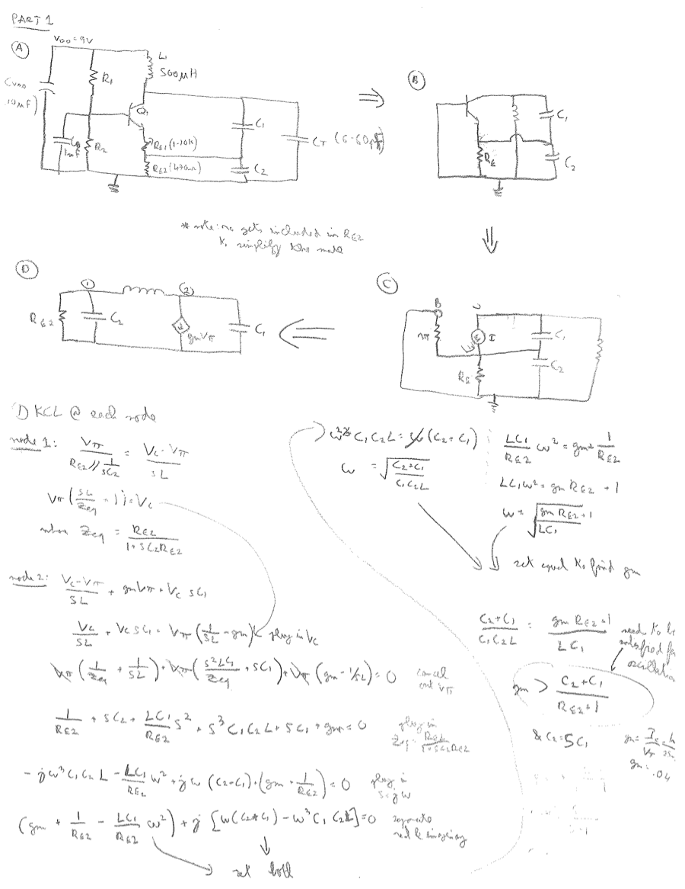Figure 21: Hand calculations from part 1 showing derivation of small signal in section 1, and the derivation of the frequency equations and stability conditions.
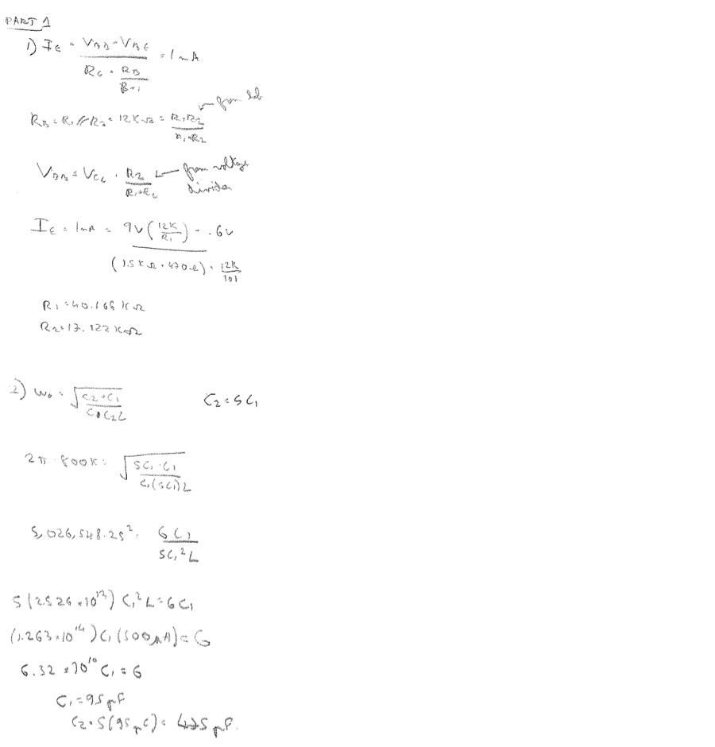Figure 22: Hand calculations to find the missing values in the oscilloscope circuit in part 1
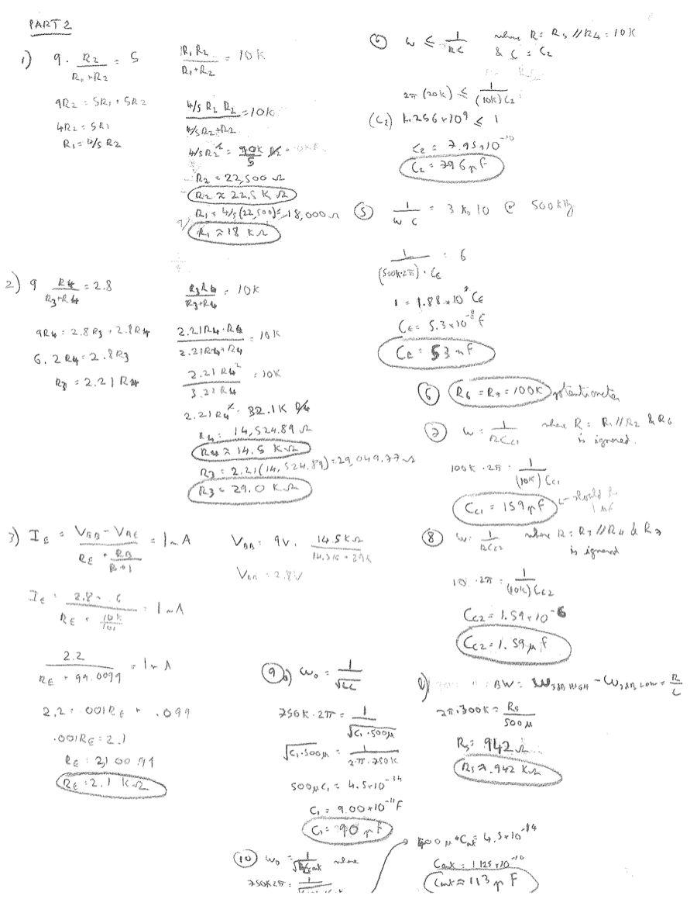Figure 23: Hand calculations from part 2 to find the missing component values for the transmitter circuit